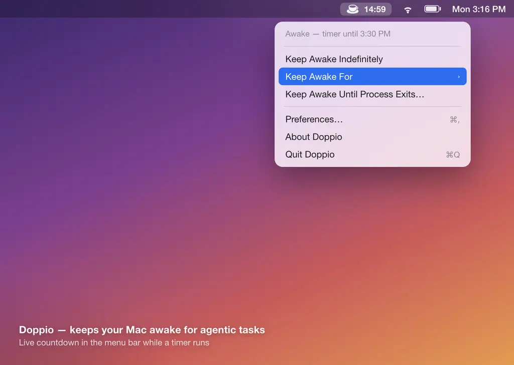
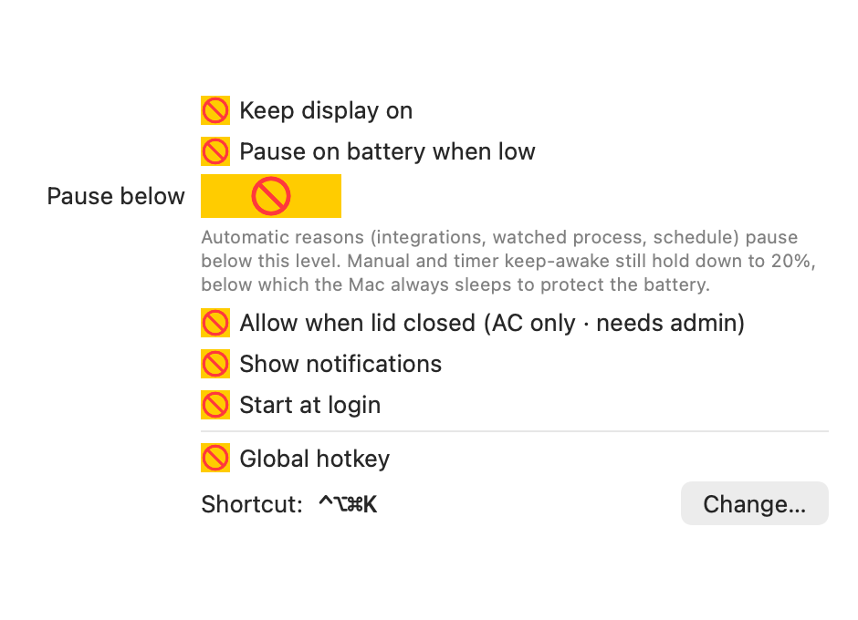

Doppio keeps your Mac running Claude Code, omp, opencode, Codex, Gemini and other long jobs — even when the screen is locked or the lid is closed. A reliable, task-aware replacement for caffeinate.
brew tap relyweb/doppio && brew install --cask doppio

caffeinate often still lets the Mac sleep when you lock the screen, and closing the lid always sleeps it. Doppio fixes both — and knows when your agents are actually working.
Stays awake while Claude Code, omp, opencode, Codex, Gemini — or your own processes — are running. Presence-based, so long model calls never let it doze mid-task.
Keep awake for a set duration or until a time, or on a recurring weekly window — with a live countdown right in the menu bar.
Uses IOKit power assertions plus pmset so work continues while locked, and even with the lid shut (on AC power).
Optionally pause on battery below a level you choose. Explicit keep-awake is honored down to a 15% safety floor so a task can’t drain it flat.
Toggle keep-awake from anywhere with a configurable shortcut, with an on-screen HUD confirming each press.
Any tool can precisely tell Doppio it’s busy via ~/.doppio/active — perfect for wiring into agent hooks.
Quick actions in the menu bar; all configuration in a native Preferences window.

Requires macOS 13 Ventura or later. Free and open source.
brew tap relyweb/doppio
brew trust relyweb/doppio # one-time: trust the tap
brew install --cask doppio
open -a Doppio
Doppio is ad-hoc signed but not yet notarized. The cask strips the download quarantine on install; if macOS still blocks it, run xattr -dr com.apple.quarantine /Applications/Doppio.app or approve it under System Settings → Privacy & Security.